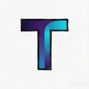

<!DOCTYPE html>
<html lang="zh-CN">
<head>
<meta charset="UTF-8">
<meta name="viewport" content="width=device-width, initial-scale=1.0">
<title>takton — Agent OS</title>
<style>
:root {
  --bg:#0c0c14; --bg-soft:#10101c; --bg-deep:#090910;
  --card:rgba(255,255,255,0.028); --card-hover:rgba(255,255,255,0.05);
  --border:rgba(124,92,255,0.14); --border-soft:rgba(255,255,255,0.06);
  --inner:inset 0 1px 0 rgba(255,255,255,0.04);
  --fg:#e8e8f2; --fg-dim:#9d9db8; --fg-faint:#5c5c78;
  --purple:#7c5cff; --teal:#34d3c4; --green:#3ddc97; --yellow:#f5c451; --red:#f46a6a; --blue:#5aa9ff;
  --r-lg:14px; --r-md:10px; --r-sm:7px; --ease:cubic-bezier(0.4,0,0.2,1);
}
* { margin:0; padding:0; box-sizing:border-box; }
html,body { height:100%; }
body { background:var(--bg); color:var(--fg); overflow:hidden; -webkit-font-smoothing:antialiased;
  font:14px/1.55 -apple-system,"SF Pro Text","PingFang SC","Microsoft YaHei",sans-serif; }
::selection { background:rgba(124,92,255,0.35); }
::-webkit-scrollbar { width:8px; height:8px; }
::-webkit-scrollbar-thumb { background:rgba(255,255,255,0.08); border-radius:4px; }
::-webkit-scrollbar-thumb:hover { background:rgba(255,255,255,0.14); }

.shell { display:grid; grid-template-columns:56px 232px 1fr; height:100vh; }
.rail { background:var(--bg-soft); border-right:1px solid var(--border-soft);
  display:flex; flex-direction:column; align-items:center; padding:10px 0; gap:2px; z-index:5; }
.rail .logo { width:38px; height:38px; border-radius:50%; margin-bottom:12px;
  display:flex; align-items:center; justify-content:center; cursor:pointer; }
.rail-btn { width:40px; height:40px; border-radius:10px; border:none; cursor:pointer;
  background:transparent; color:var(--fg-faint); display:flex; align-items:center;
  justify-content:center; transition:all 180ms var(--ease); position:relative; }
.rail-btn:hover { background:var(--card-hover); color:var(--fg-dim); }
.rail-btn.active { background:rgba(124,92,255,0.16); color:var(--purple); }
.rail-btn.active::before { content:''; position:absolute; left:-8px; top:10px; bottom:10px;
  width:3px; border-radius:2px; background:var(--purple); }
.rail-btn .badge { position:absolute; top:4px; right:4px; min-width:15px; height:15px; padding:0 4px;
  border-radius:8px; background:var(--red); color:#fff; font-size:9px; font-weight:600;
  display:flex; align-items:center; justify-content:center; }
.rail-btn .dot { position:absolute; top:6px; right:6px; width:7px; height:7px; border-radius:50%; background:var(--green); }
.rail .spacer { flex:1; }
.rail-btn svg { width:19px; height:19px; }

.sidebar { background:var(--bg-soft); border-right:1px solid var(--border-soft);
  display:flex; flex-direction:column; overflow:hidden; }
.sb-head { padding:16px 16px 10px; }
.sb-title { font-size:15px; font-weight:600; letter-spacing:-0.01em; }
.sb-sub { font-size:11px; color:var(--fg-faint); margin-top:2px; }
.sb-search { margin:8px 12px; display:flex; align-items:center; gap:7px; padding:7px 10px;
  background:rgba(255,255,255,0.03); border:1px solid var(--border-soft); border-radius:8px;
  color:var(--fg-faint); font-size:12px; cursor:pointer; transition:border-color 160ms; }
.sb-search:hover { border-color:var(--border); }
.sb-search kbd { margin-left:auto; font-size:10px; background:rgba(255,255,255,0.05);
  padding:1px 5px; border-radius:4px; font-family:inherit; }
.sb-section { padding:10px 16px 4px; font-size:10px; font-weight:600; letter-spacing:0.09em;
  text-transform:uppercase; color:var(--fg-faint); }
.sb-scroll { flex:1; overflow-y:auto; padding-bottom:12px; }
.sb-item { margin:1px 8px; padding:7px 10px; border-radius:8px; cursor:pointer;
  display:flex; align-items:center; gap:9px; font-size:13px; color:var(--fg-dim);
  transition:all 150ms var(--ease); }
.sb-item:hover { background:var(--card-hover); color:var(--fg); }
.sb-item .nm { overflow:hidden; text-overflow:ellipsis; white-space:nowrap; }
.sb-item .meta { margin-left:auto; font-size:10px; color:var(--fg-faint); flex-shrink:0; }

.main { overflow-y:auto; position:relative; }
.main::before { content:''; position:fixed; top:-200px; right:-100px; width:600px; height:600px;
  background:radial-gradient(circle,rgba(124,92,255,0.07),transparent 65%); pointer-events:none; }
.page { padding:22px 26px 40px; max-width:1180px; display:none; }
.page.on { display:block; animation:fadeUp 220ms var(--ease); }
@keyframes fadeUp { from { opacity:0; transform:translateY(6px); } to { opacity:1; transform:none; } }
.page-head { display:flex; align-items:flex-end; justify-content:space-between; margin-bottom:18px; gap:12px; }
.page-title { font-size:20px; font-weight:600; letter-spacing:-0.02em; }
.page-sub { font-size:12px; color:var(--fg-dim); margin-top:3px; }

.card { background:var(--card); border:1px solid var(--border-soft); border-radius:var(--r-lg);
  box-shadow:var(--inner); backdrop-filter:blur(14px); transition:border-color 180ms var(--ease); }
.card:hover { border-color:var(--border); }
.card-p { padding:14px 16px; }
.clickable { cursor:pointer; }
.grid { display:grid; gap:12px; }
.g2 { grid-template-columns:1fr 1fr; } .g3 { grid-template-columns:repeat(3,1fr); } .g4 { grid-template-columns:repeat(4,1fr); }
.mt { margin-top:12px; } .mt-lg { margin-top:20px; }
.row { display:flex; align-items:center; gap:10px; }
.between { justify-content:space-between; } .wrap { flex-wrap:wrap; }
.dim { color:var(--fg-dim); } .faint { color:var(--fg-faint); }
.sm { font-size:12px; } .xs { font-size:11px; }
.mono { font-family:"SF Mono",Menlo,Consolas,monospace; }
.b { font-weight:600; }
.tag { display:inline-flex; align-items:center; gap:5px; padding:2px 8px; border-radius:6px;
  font-size:10.5px; font-weight:500; border:1px solid var(--border-soft); color:var(--fg-dim);
  background:rgba(255,255,255,0.02); }
.tag.purple { color:#b8a5ff; border-color:rgba(124,92,255,0.3); background:rgba(124,92,255,0.09); }
.tag.teal { color:var(--teal); border-color:rgba(52,211,196,0.3); background:rgba(52,211,196,0.08); }
.tag.green { color:var(--green); border-color:rgba(61,220,151,0.3); background:rgba(61,220,151,0.08); }
.tag.yellow { color:var(--yellow); border-color:rgba(245,196,81,0.3); background:rgba(245,196,81,0.08); }
.tag.red { color:var(--red); border-color:rgba(244,106,106,0.3); background:rgba(244,106,106,0.08); }
.tag.blue { color:var(--blue); border-color:rgba(90,169,255,0.3); background:rgba(90,169,255,0.08); }

.btn { padding:7px 14px; border-radius:9px; border:1px solid var(--border-soft); cursor:pointer;
  background:var(--card); color:var(--fg); font-size:12.5px; font-weight:500;
  transition:all 160ms var(--ease); font-family:inherit; }
.btn:hover { background:var(--card-hover); border-color:var(--border); }
.btn.primary { background:var(--purple); border-color:transparent; color:#fff;
  box-shadow:0 2px 10px rgba(124,92,255,0.35); }
.btn.primary:hover { background:#8d70ff; }
.btn.ghost-green { color:var(--green); border-color:rgba(61,220,151,0.35); }
.btn.ghost-green:hover { background:rgba(61,220,151,0.1); }
.btn.ghost-red { color:var(--red); border-color:rgba(244,106,106,0.35); }
.btn.ghost-red:hover { background:rgba(244,106,106,0.1); }
.btn.sm { padding:4px 10px; font-size:11.5px; border-radius:7px; }
.btn:disabled { opacity:0.4; cursor:not-allowed; }

.st-dot { width:8px; height:8px; border-radius:50%; display:inline-block; flex-shrink:0; }
.st-working { background:var(--green); box-shadow:0 0 6px rgba(61,220,151,0.6); animation:pulse 2s infinite; }
.st-idle { background:var(--fg-faint); }
.st-waiting { background:var(--yellow); box-shadow:0 0 6px rgba(245,196,81,0.5); }
.st-suspended { background:var(--red); }
@keyframes pulse { 0%,100% { opacity:1; } 50% { opacity:0.45; } }

.avatar { width:38px; height:38px; border-radius:11px; flex-shrink:0;
  display:flex; align-items:center; justify-content:center; font-size:15px; font-weight:600; color:#fff; }
.avatar.lg { width:52px; height:52px; border-radius:14px; font-size:20px; }
.bar { height:5px; border-radius:3px; background:rgba(255,255,255,0.06); overflow:hidden; }
.bar > i { display:block; height:100%; border-radius:3px;
  background:linear-gradient(90deg,var(--purple),#9d85ff); transition:width 400ms var(--ease); }
.bar.teal > i { background:linear-gradient(90deg,#2ab5a7,var(--teal)); }
.bar.green > i { background:linear-gradient(90deg,#2eb87e,var(--green)); }
.bar.yellow > i { background:linear-gradient(90deg,#dba93a,var(--yellow)); }
.bar.red > i { background:linear-gradient(90deg,#d05252,var(--red)); }
.divider { height:1px; background:var(--border-soft); margin:12px 0; }
.kv { display:flex; justify-content:space-between; gap:10px; padding:5px 0; font-size:12.5px; }
.kv .k { color:var(--fg-faint); } .kv .v { color:var(--fg); font-weight:500; text-align:right; }
.sec-title { font-size:13.5px; font-weight:600; margin-bottom:10px; display:flex; align-items:center; gap:8px; }
.sec-title .cnt { font-size:10.5px; color:var(--fg-faint); font-weight:500; }
.section-gap { margin-top:22px; }

.stat-num { font-size:24px; font-weight:650; letter-spacing:-0.02em; }
.stat-label { font-size:11px; color:var(--fg-faint); margin-top:2px; }
.stat-delta { font-size:10.5px; margin-top:4px; }
.stat-delta.up { color:var(--green); } .stat-delta.warn { color:var(--yellow); }

.feed-item { display:flex; gap:11px; padding:10px 0; border-bottom:1px solid rgba(255,255,255,0.035); }
.feed-item:last-child { border-bottom:none; }
.feed-ico { width:30px; height:30px; border-radius:9px; flex-shrink:0;
  display:flex; align-items:center; justify-content:center; font-size:13px; }
.feed-t { font-size:12.5px; } .feed-t .who { font-weight:600; }
.feed-time { font-size:10.5px; color:var(--fg-faint); margin-top:1px; }

.chat-log { display:flex; flex-direction:column; gap:10px; padding:4px 0 12px; }
.msg { max-width:85%; padding:9px 13px; border-radius:13px; font-size:13px; }
.msg.me { align-self:flex-end; background:rgba(124,92,255,0.18); border:1px solid rgba(124,92,255,0.25); border-bottom-right-radius:4px; }
.msg.ai { align-self:flex-start; background:var(--card); border:1px solid var(--border-soft); border-bottom-left-radius:4px; }
.chat-input { display:flex; gap:8px; padding:12px 0 4px; border-top:1px solid var(--border-soft); }
.chat-input input { flex:1; background:rgba(255,255,255,0.03); border:1px solid var(--border-soft);
  border-radius:9px; padding:8px 12px; color:var(--fg); font-size:13px; outline:none; font-family:inherit; }
.chat-input input:focus { border-color:var(--purple); }

.tl { position:relative; padding-left:20px; }
.tl::before { content:''; position:absolute; left:5px; top:6px; bottom:6px; width:1.5px; background:rgba(124,92,255,0.2); }
.tl-item { position:relative; padding:7px 0 7px 6px; }
.tl-item::before { content:''; position:absolute; left:-19px; top:12px; width:9px; height:9px;
  border-radius:50%; background:var(--bg); border:2px solid var(--purple); }
.tl-item.teal::before { border-color:var(--teal); }
.tl-item.yellow::before { border-color:var(--yellow); }
.tl-item.green::before { border-color:var(--green); }
.tl-item.red::before { border-color:var(--red); }

.proc-table { width:100%; border-collapse:collapse; font-size:12px; }
.proc-table th { text-align:left; padding:8px 10px; font-size:10px; letter-spacing:0.08em;
  text-transform:uppercase; color:var(--fg-faint); border-bottom:1px solid var(--border-soft); }
.proc-table td { padding:8px 10px; border-bottom:1px solid rgba(255,255,255,0.03); }
.proc-table tr:hover td { background:rgba(255,255,255,0.02); }

/* ── 抽屉（Profile / 知识详情 / 目标详情）── */
.drawer-mask { position:fixed; inset:0; background:rgba(6,6,12,0.55); backdrop-filter:blur(3px);
  opacity:0; pointer-events:none; transition:opacity 220ms var(--ease); z-index:40; }
.drawer-mask.on { opacity:1; pointer-events:auto; }
.drawer { position:fixed; top:0; right:0; bottom:0; width:540px; z-index:41;
  background:var(--bg-soft); border-left:1px solid var(--border);
  transform:translateX(100%); transition:transform 260ms var(--ease);
  display:flex; flex-direction:column; box-shadow:-20px 0 60px rgba(0,0,0,0.4); }
.drawer.on { transform:none; }
.drawer-head { padding:18px 20px 14px; border-bottom:1px solid var(--border-soft); }
.drawer-body { flex:1; overflow-y:auto; padding:16px 20px; }
.drawer-tabs { display:flex; gap:4px; padding:10px 20px 0; flex-wrap:wrap; }
.dtab { padding:6px 13px; border-radius:8px 8px 0 0; font-size:12px; cursor:pointer;
  color:var(--fg-faint); border:1px solid transparent; border-bottom:none; }
.dtab.on { color:var(--fg); background:var(--card); border-color:var(--border-soft); }
.dpane { display:none; } .dpane.on { display:block; }

/* ── 模态 / 向导 ── */
.modal-mask { position:fixed; inset:0; background:rgba(6,6,12,0.6); backdrop-filter:blur(4px);
  display:none; align-items:center; justify-content:center; z-index:50; }
.modal-mask.on { display:flex; animation:fadeUp 200ms var(--ease); }
.modal { width:560px; max-width:92vw; max-height:86vh; background:var(--bg-soft);
  border:1px solid var(--border); border-radius:16px; box-shadow:0 24px 80px rgba(0,0,0,0.6);
  display:flex; flex-direction:column; overflow:hidden; }
.modal-head { padding:16px 20px 12px; border-bottom:1px solid var(--border-soft);
  display:flex; align-items:center; justify-content:space-between; }
.modal-title { font-size:15px; font-weight:600; }
.modal-body { padding:16px 20px; overflow-y:auto; flex:1; }
.modal-foot { padding:12px 20px; border-top:1px solid var(--border-soft);
  display:flex; justify-content:flex-end; gap:8px; }
.wizard-steps { display:flex; gap:6px; padding:0 20px 12px; }
.wstep { flex:1; text-align:center; font-size:10.5px; color:var(--fg-faint); padding-top:8px;
  border-top:2px solid rgba(255,255,255,0.08); }
.wstep.on { color:var(--purple); border-top-color:var(--purple); }
.wstep.done { color:var(--green); border-top-color:var(--green); }

.field { margin-bottom:14px; }
.field label { display:block; font-size:11.5px; color:var(--fg-dim); margin-bottom:5px; }
.field input, .field select, .field textarea { width:100%; background:rgba(255,255,255,0.03);
  border:1px solid var(--border-soft); border-radius:8px; padding:8px 11px; color:var(--fg);
  font-size:13px; outline:none; font-family:inherit; transition:border-color 160ms; }
.field input:focus, .field select:focus, .field textarea:focus { border-color:var(--purple); }
.field textarea { resize:vertical; min-height:64px; }
.field .hint { font-size:10.5px; color:var(--fg-faint); margin-top:4px; }
.chip-grid { display:flex; flex-wrap:wrap; gap:6px; }
.chip { padding:5px 11px; border-radius:8px; border:1px solid var(--border-soft); font-size:12px;
  cursor:pointer; color:var(--fg-dim); transition:all 150ms; user-select:none; }
.chip:hover { border-color:var(--border); }
.chip.on { background:rgba(124,92,255,0.14); border-color:var(--purple); color:var(--fg); }

/* ── 设置页二级导航 ── */
.settings-grid { display:grid; grid-template-columns:180px 1fr; gap:20px; align-items:start; }
.set-nav { position:sticky; top:0; }
.set-nav-item { padding:8px 12px; border-radius:8px; font-size:13px; color:var(--fg-dim);
  cursor:pointer; margin-bottom:2px; transition:all 150ms; }
.set-nav-item:hover { background:var(--card-hover); }
.set-nav-item.on { background:rgba(124,92,255,0.13); color:var(--fg); }
.set-pane { display:none; } .set-pane.on { display:block; }

.toggle { width:36px; height:20px; border-radius:10px; background:rgba(255,255,255,0.1);
  position:relative; cursor:pointer; transition:background 180ms; flex-shrink:0; }
.toggle::after { content:''; position:absolute; top:2px; left:2px; width:16px; height:16px;
  border-radius:50%; background:#fff; transition:transform 180ms var(--ease); }
.toggle.on { background:var(--purple); }
.toggle.on::after { transform:translateX(16px); }

.toast { position:fixed; bottom:24px; left:50%; transform:translateX(-50%) translateY(80px);
  background:#1a1a2c; border:1px solid var(--border); border-radius:10px;
  padding:10px 18px; font-size:12.5px; z-index:99; opacity:0; transition:all 280ms var(--ease);
  box-shadow:0 8px 30px rgba(0,0,0,0.5); max-width:70vw; }
.toast.on { transform:translateX(-50%); opacity:1; }

.empty-hint { text-align:center; color:var(--fg-faint); font-size:12px; padding:24px 0; }
</style>
</head>
<body>

<div class="shell">
  <nav class="rail" id="rail"></nav>
  <aside class="sidebar">
    <div class="sb-head">
      <div class="sb-title">takton</div>
      <div class="sb-sub" id="sb-sub">7 个 Agent 运行中</div>
    </div>
    <div class="sb-search" onclick="toast('全局搜索：Agent / 目标 / 知识 / 审批 / 进程（demo 占位）')">
      <svg width="13" height="13" viewBox="0 0 24 24" fill="none" stroke="currentColor" stroke-width="2"><circle cx="11" cy="11" r="7"/><path d="M21 21l-4.3-4.3"/></svg>
      搜索 Agent / 目标 / 知识… <kbd>⌘K</kbd>
    </div>
    <div style="padding:2px 12px 8px;">
      <button class="btn primary" style="width:100%;" onclick="openWizard('hire')">+ 新建 Agent</button>
    </div>
    <div class="sb-scroll" id="sb-scroll"></div>
  </aside>
  <main class="main" id="main"></main>
</div>

<!-- 抽屉 / 模态 / toast -->
<div class="drawer-mask" id="drawer-mask" onclick="closeDrawer()"></div>
<aside class="drawer" id="drawer"></aside>
<div class="modal-mask" id="modal-mask"><div class="modal" id="modal"></div></div>
<div class="toast" id="toast"></div>

<script>
/* ═══════════════════════ 数据模型（映射 kernel/workforce 真实语义）═══════════════════════ */
const AGENTS = [
  {id:'ceo', name:'沈策', role:'协调者', grad:'#7c5cff,#5a3ee0', st:'working', stText:'Q3 规划终审材料',
   caps:['全部（协调者）'], budget:16, budgetMax:80000, today:{done:3, rate:100}, reportsTo:'你',
   cost:{today:12870, week:84300, byGoal:{'O1':62,'O2':38}},
   memory:[{k:'persona',v:2,c:'全局视角，先问目标再动手；汇报必须带数据。'},{k:'methodology',v:3,c:'OKR 分解：每个 KR 必须有负责 Agent + 可验证指标。'},{k:'experience',v:5,c:'07-25：Q3 规划草案一轮通过关键在预算切分有依据。'}],
   growth:[{t:'07-27 08:42',x:'完成 Q3 规划草案（待终审）',c:''},{t:'07-25 16:04',x:'通过 worker 池架构提案',c:'green'},{t:'07-20',x:'启用',c:'teal'}],
   procs:[{pid:'c2a9b8e3',st:'running',used:12870,max:80000,time:'18m'}]},
  {id:'cto', name:'陈工', role:'技术负责人', grad:'#34d3c4,#1f9e92', st:'working', stText:'v0.4 内核架构评审',
   caps:['架构评审','全部只读','approve_code'], budget:22, budgetMax:60000, today:{done:5, rate:100}, reportsTo:'沈策',
   cost:{today:9200, week:61800, byGoal:{'O1-KR1':88,'其他':12}},
   memory:[{k:'persona',v:2,c:'先读代码再下结论；架构决策必须写 ADR。'},{k:'methodology',v:2,c:'评审三段式：正确性 → 稳定性 → 可维护性。'}],
   growth:[{t:'07-26 18:22',x:'完成 kernel↔loop 融合设计（ADR-014）',c:''},{t:'07-24',x:'提出「无预算即绕过」红线',c:'yellow'},{t:'07-19',x:'启用',c:'teal'}],
   procs:[{pid:'a1b2c3d4',st:'running',used:9200,max:60000,time:'33m'}]},
  {id:'research', name:'文研', role:'研究员', grad:'#5aa9ff,#3a7fd0', st:'working', stText:'42 篇论文综述',
   caps:['web_search','file_read','rag'], budget:88, budgetMax:50000, warn:true, today:{done:9, rate:94}, reportsTo:'陈工',
   cost:{today:44002, week:198500, byGoal:{'O1-KR3':55,'O2':31,'其他':14}},
   memory:[{k:'persona',v:2,c:'严谨、慢热但结论可靠；宁可标注不确定也不编造来源。'},{k:'methodology',v:3,c:'文献综述：先聚类再精读，必须给出处链接与置信度。'},{k:'experience',v:14,c:'07-26：arXiv 缓存命中率高时优先本地；07-27：检索发散被金算收紧预算（教训）。'}],
   growth:[{t:'07-27 08:55',x:'完成《Agent 内核调度 6 范式》综述',c:''},{t:'07-27 07:15',x:'申请 arXiv 全量订阅（第 3 次能力申请）',c:'yellow'},{t:'07-27 05:30',x:'检索发散超支 2.3×，被收紧预算',c:'red'},{t:'07-26 23:10',x:'学会先聚类后精读（methodology v3）',c:'teal'},{t:'07-20',x:'启用',c:'teal'}],
   procs:[{pid:'b7e1d4f9',st:'running',used:44002,max:50000,time:'1h 12m'}]},
  {id:'dev', name:'码力', role:'开发者', grad:'#3ddc97,#22a06e', st:'working', stText:'PR #248 · worker 池',
   caps:['file_rw','command','git'], budget:41, budgetMax:50000, today:{done:17, rate:97}, reportsTo:'陈工',
   cost:{today:20413, week:112600, byGoal:{'O1-KR1':79,'O1-KR2':21}},
   memory:[{k:'persona',v:1,c:'先跑测试再说话；最小变更原则。'},{k:'methodology',v:4,c:'修复必须带回归测试；commit message 写清为什么。'}],
   growth:[{t:'07-27 06:58',x:'提交 PR #248（740 tests 全绿）',c:''},{t:'07-26 22:10',x:'申请删除 legacy 34 文件',c:'yellow'},{t:'07-21',x:'启用',c:'teal'}],
   procs:[{pid:'a3f8c2d1',st:'running',used:20413,max:50000,time:'42m'}]},
  {id:'qa', name:'测安', role:'测试', grad:'#f5c451,#d09a2b', st:'idle', stText:'待命 · 技能已更新',
   caps:['test','file_rw'], budget:23, budgetMax:40000, today:{done:4, rate:100}, reportsTo:'陈工',
   cost:{today:9102, week:45100, byGoal:{'O1-KR1':92,'其他':8}},
   memory:[{k:'persona',v:1,c:'怀疑一切"应该没问题"；压测必须从零开始复现。'},{k:'methodology',v:3,c:'压测 SOP v3：基线 → 梯度加压 → 拐点分析 → 报告。'}],
   growth:[{t:'07-27 07:40',x:'压测 SOP 升级 v2→v3（成功率 94%）',c:'teal'},{t:'07-22',x:'启用',c:'teal'}],
   procs:[{pid:'f1c4a9b7',st:'suspended',used:9102,max:40000,time:'挂起 14m'}]},
  {id:'secretary', name:'小秘', role:'助理', grad:'#b48cff,#8a5ce0', st:'waiting', stText:'等审批 ×3',
   caps:['notify','calendar','feishu'], budget:16, budgetMax:20000, today:{done:6, rate:100}, reportsTo:'沈策',
   cost:{today:3201, week:18700, byGoal:{'行政':100}},
   memory:[{k:'persona',v:1,c:'事事有回音；请示不过夜。'},{k:'duty',v:1,c:'日程、提醒、对外窗口消息分拣。'}],
   growth:[{t:'07-27 09:12',x:'飞书群周报推送（已批准）',c:'green'},{t:'07-23',x:'启用',c:'teal'}],
   procs:[{pid:'d5f3c7a2',st:'waiting',used:3201,max:20000,time:'2h 14m'}]},
  {id:'finance', name:'金算', role:'成本分析', grad:'#f46a6a,#c74a4a', st:'working', stText:'预算异常分析',
   caps:['db_read','report'], budget:18, budgetMax:30000, today:{done:2, rate:100}, reportsTo:'沈策',
   cost:{today:5540, week:31400, byGoal:{'O2':85,'其他':15}},
   memory:[{k:'persona',v:1,c:'每一分钱都要有去处；异常先止血再分析。'},{k:'methodology',v:2,c:'预算三问：花在哪、值不值、能不能省。'}],
   growth:[{t:'07-27 05:30',x:'自动收紧文研预算 88k→50k（规则触发）',c:'green'},{t:'07-24',x:'启用',c:'teal'}],
   procs:[{pid:'e8b2d6f1',st:'running',used:5540,max:30000,time:'26m'}]},
];

const GOALS = [
  {id:'O1', title:'Takton GitHub Star 破 1,000', owner:'沈策', period:'2026 Q3', st:'ontrack', stText:'进行中 · 健康', progress:71,
   krs:[
     {id:'O1-KR1', t:'内核稳定性：CI 全绿 + 三设备实机验证', p:80, owner:'陈工 / 测安', note:'本周：kernel 压测 c=50 通过', bar:''},
     {id:'O1-KR2', t:'文档与上手体验：30 分钟第一个 Agent启用', p:60, owner:'文研', note:'阻塞：AIOS 前端未定型（本 demo 解）', bar:'teal'},
     {id:'O1-KR3', t:'社区内容：12 篇深度技术文', p:72, owner:'文研', note:'已发 8/12 ·《kernel 中介设计》阅读 4.2k', bar:'green'},
   ],
   reviews:[{t:'07-27 08:42',x:'沈策提交 Q3 规划终审（待你审）'},{t:'07-25 16:04',x:'规划制定完成，4 个 KR 分派'}]},
  {id:'O2', title:'月度 token 成本压降 30%', owner:'金算', period:'2026 Q3', st:'risk', stText:'有风险', progress:62,
   krs:[
     {id:'O2-KR1', t:'全员预算硬顶覆盖率 100%', p:100, owner:'金算', note:'兜底预算 50k + 事前刹车已上线（07-27）', bar:'green'},
     {id:'O2-KR2', t:'研究类任务轮次收敛（≤8 次搜索）', p:45, owner:'文研', note:'收敛刹车上线 2 天，样本积累中 · 文研超支 2.3× 为主因', bar:'yellow'},
   ],
   reviews:[{t:'07-27 05:30',x:'金算收紧文研预算（规则自动执行）'}]},
];

let APPROVALS = [
  {id:'ap1', agent:'ceo', title:'Q3 规划草案终审', cls:'decision', clsText:'决策类', time:'08:42', wait:'2h 14m',
   desc:'KR 分派 沈策→陈工（内核）/ 文研（内容+文档）/ 金算（成本）；预算切分按上季实际 ×1.2；新增每周一自动汇报。',
   ref:{type:'goal',id:'O1',label:'查看目标 O1'}, actions:['approve','revise','view']},
  {id:'ap2', agent:'research', title:'申请新增数据源：arXiv API 全量订阅', cls:'perm', clsText:'权限类', time:'07:15', wait:'3h 40m',
   desc:'夜间阅读覆盖率不足，42 篇中 31 篇来自缓存。全量订阅后可预筛增量 ~200 篇/日。预估成本 +15%/月（金算会签：可接受，前提是收敛刹车持续有效）。',
   ref:{type:'agent',id:'research',label:'查看 Agent'}, actions:['approve30','reject','more']},
  {id:'ap3', agent:'dev', title:'申请删除 legacy 目录 34 个文件', cls:'danger', clsText:'高危类', time:'昨天 22:10', wait:'12h',
   desc:'范围 backend/legacy_v1/* 34 文件 / 8,412 行。静态分析确认无引用（附依赖图谱）；已推送归档分支 archive/legacy-v1。',
   ref:{type:'kernel',id:'',label:'查看 mediate 记录'}, actions:['approve','reject','view']},
];
const RESOLVED = [
  {t:'小秘 · 飞书群周报推送', r:'ok', time:'09:12'},{t:'测安 · 压测并发提升至 c=80', r:'ok', time:'09:05'},
  {t:'金算 · 冻结文研临时预算', r:'ok', time:'08:58'},{t:'码力 · 安装 playwright 浏览器', r:'ok', time:'08:31'},
  {t:'文研 · 引用外部付费 API', r:'no', time:'08:20'},
];

const KNOWLEDGE = [
  {id:'k1', type:'综述', cls:'purple', title:'《Agent 内核调度的 6 种范式》', author:'research', time:'今天 07:15',
   desc:'引 12 篇 · 与 v0.4 攻坚组共享', tags:['被引用 4 次','已入 RAG'],
   body:'对比 Actor/CSP/Plan-Execute/ReAct/Mediated/Kernel 六种调度范式在生产环境的取舍。核心结论：mediated 架构（kernel 统一中介工具调用）在权限治理与预算控制上显著优于直调架构，代价是 3-5% 的调度延迟。与 Takton v0.4 的 mediate 设计互相印证。'},
  {id:'k2', type:'SOP', cls:'teal', title:'《kernel 压测标准作业流程 v3》', author:'qa', time:'昨天 23:40',
   desc:'蒸馏自 47 次成功任务 · 已挂技能', tags:['成功率 94%','evolution 审批过'],
   body:'基线（c=1）→ 梯度加压（c=10/30/50/80）→ 每级 3 分钟稳定观察 → 拐点记录（p99 突刺 / 错误率 >0.1%）→ 报告模板。v3 改进：加压前自动校验兜底预算配置，防止压测本身烧穿预算。'},
  {id:'k3', type:'决策记录', cls:'blue', title:'《为什么 worker 池按身份而非按任务》', author:'cto', time:'07-25',
   desc:'ADR-014 · 关联 PR #248', tags:['影响：架构','Wiki 已链接'],
   body:'备选：按任务池（每单新 loop）vs 按身份池（per-identity 长生命周期）。选后者：初始化开销降 80%，且身份与 session 天然 1:1。代价：必须显式重置 run 级状态（_reset_run_state），已在评审中列为红线并配套测试。'},
  {id:'k4', type:'综述', cls:'purple', title:'《MOE 模型本地部署成本模型》', author:'research', time:'07-26',
   desc:'支撑 O2 成本目标 · 金算引用', tags:['被引用 7 次','已入 RAG'],
   body:'MOE 激活参数与显存/延迟的非线性关系建模。对 Qwen3-MoE 在 MI210 的实测：激活 3B 时 token 成本约为 dense 7B 的 0.6×，是 O2 目标的核心依据。'},
  {id:'k5', type:'决策记录', cls:'blue', title:'《异步入口预算红线：无预算即绕过》', author:'ceo', time:'07-24',
   desc:'ADR-013 · 催生兜底预算机制', tags:['红线级','Wiki 已链接'],
   body:'异步无人值守场景的最后防线是预算硬顶。身份默认预算 None = 第三道防线不存在。决定：dispatcher 对无预算身份自动挂兜底预算（默认 50k），0 才是显式不限。'},
  {id:'k6', type:'SOP', cls:'teal', title:'《三设备实机验证清单》', author:'qa', time:'07-22',
   desc:'Mi310p / Mac / Win Xeon 矩阵', tags:['执行 3 次','evolution 审批过'],
   body:'每设备：安装 → 首个 Agent启用 → 任务执行 → 审批流转 → 报告落库。已知差异：Arch 需手动装 bwrap；Win 的 desktop 权限弹窗需预先策略。'},
];

const EVENTS = [
  {day:'今天 · 07-27', items:[
    {t:'08:55', x:'文研 完成《Agent 内核调度 6 范式》综述', type:'交付', c:'', ref:{type:'knowledge',id:'k1'}},
    {t:'07:40', x:'测安 技能升级：压测 SOP v2 → v3', type:'学习', c:'teal', ref:{type:'agent',id:'qa'}},
    {t:'07:15', x:'文研 申请 arXiv 全量订阅（等审批）', type:'审批', c:'yellow', ref:{type:'approval',id:'ap2'}},
    {t:'06:58', x:'码力 提交 PR #248 · worker 池（740 tests 全绿）', type:'交付', c:'', ref:{type:'agent',id:'dev'}},
    {t:'05:30', x:'金算 自动收紧文研单任务预算 88k→50k', type:'治理', c:'green', ref:{type:'agent',id:'finance'}},
  ]},
  {day:'昨天 · 07-26', items:[
    {t:'23:10', x:'文研 学习 Transformer 架构改进 12 篇（记忆 +3）', type:'学习', c:'teal', ref:{type:'agent',id:'research'}},
    {t:'18:22', x:'陈工 完成 kernel↔loop 融合设计（ADR-014）', type:'交付', c:'', ref:{type:'knowledge',id:'k3'}},
    {t:'22:10', x:'码力 申请删除 legacy 34 文件（等审批）', type:'审批', c:'yellow', ref:{type:'approval',id:'ap3'}},
    {t:'16:04', x:'沈策 通过「worker 池」架构提案（用时 8 分钟）', type:'审批', c:'green', ref:{type:'agent',id:'ceo'}},
  ]},
];

const INTERCEPTS = [
  {who:'文研 → terminal（能力外）', r:'deny'},{who:'码力 → rm legacy/（高危）', r:'escalate'},
  {who:'文研 → arXiv API（无出站）', r:'escalate'},{who:'小秘 → db_write（能力外）', r:'deny'},
  {who:'测安 → /etc/hosts 读取（路径外）', r:'deny'},
];
const BUDGET_EVENTS = [
  {x:'文研 · 事前刹车（预估不足）', t:'08:14 · 省 ~22k'},{x:'文研 · 事后 charge 超限中断', t:'05:47 · 省 ~16k'},
  {x:'金算 · 兜底预算规则触发', t:'05:30 · 自动收紧'},
];
const NODES = [
  {name:'MI310p · Arch Linux', role:'主力计算', st:'online', info:'GPU 68% · 负载正常'},
  {name:'MacBook Pro M4', role:'开发机', st:'online', info:'bwrap N/A · desktop 可用'},
  {name:'Win Xeon 工作站', role:'Windows 验证', st:'idle', info:'等待实机验证任务'},
];

const MARKET_SKILLS = [
  {id:'sk1', name:'web-research-pro', author:'社区 · agentic-lab', desc:'深度研究：多源检索 + 引用链 + 综述生成', installs:'2.1k', installed:true},
  {id:'sk2', name:'feishu-doc-writer', author:'官方', desc:'直接读写飞书文档/多维表格', installs:'1.4k', installed:true},
  {id:'sk3', name:'docker-ops', author:'社区 · devops-cn', desc:'容器全生命周期：构建/编排/排障 SOP', installs:'986', installed:false},
  {id:'sk4', name:'paper-daily', author:'社区 · ml-daily', desc:'arXiv 每日增量筛选 + 三行摘要推送', installs:'743', installed:false},
  {id:'sk5', name:'sql-analyst', author:'官方', desc:'自然语言查数 + 图表生成（只读安全模式）', installs:'1.9k', installed:false},
  {id:'sk6', name:'i18n-translator', author:'社区 · l10n', desc:'文档级翻译：术语表一致性 + 格式保留', installs:'655', installed:false},
];
const MCP_SERVERS = [
  {name:'qdrant', endpoint:'http://127.0.0.1:6333', st:'connected', tools:4, desc:'向量检索（RAG 底座）'},
  {name:'playwright', endpoint:'stdio://playwright-mcp', st:'connected', tools:11, desc:'浏览器自动化'},
  {name:'github', endpoint:'https://api.github.com/mcp', st:'error', tools:0, desc:'token 过期 · 需重新授权'},
];

const PROJECTS = [
  {name:'⚡ v0.4 内核攻坚组', members:['cto','dev','qa','research'], msgs:[
    {a:'cto', x:'worker 池合入后 dispatcher 初始化开销降了 80%，建议把 evolution 阈值也按身份差异化。'},
    {a:'dev', x:'同意。我测了 per-identity 配置读取开销，可忽略。PR 里顺带加了 6 个 settings 键。'},
    {a:'qa', x:'回归 740 全绿。但我发现 suspend 挂起期间 iteration 计数还在走——这是设计如此吗？'},
    {a:'cto', x:'好问题。gate 在 consume 之前，挂起不耗配额——你看到的计数是日志序号。我补一条注释。'},
  ]},
  {name:'📊 Q3 市场研究组', members:['research','finance','secretary'], msgs:[
    {a:'research', x:'竞品周报：两家同类项目本周 star 增量下滑，我们的 AIOS 叙事是差异点。'},
    {a:'finance', x:'同意，但建议把「成本压降 30%」也写进对外叙事——这是硬数据。'},
  ]},
];

/* ═══════════════════════ 导航与视图框架 ═══════════════════════ */
const VIEWS = [
  {id:'dashboard', t:'驾驶舱', icon:'<rect x="3" y="3" width="7" height="9" rx="1.5"/><rect x="14" y="3" width="7" height="5" rx="1.5"/><rect x="14" y="12" width="7" height="9" rx="1.5"/><rect x="3" y="16" width="7" height="5" rx="1.5"/>'},
  {id:'agents', t:'Agent', icon:'<circle cx="9" cy="8" r="3.2"/><path d="M3.5 19c.6-3.2 2.8-5 5.5-5s4.9 1.8 5.5 5"/><circle cx="17" cy="9" r="2.4"/><path d="M15.5 14.6c2.9.3 4.7 1.9 5.2 4.4"/>', dot:true},
  {id:'goals', t:'目标', icon:'<circle cx="12" cy="12" r="8.5"/><circle cx="12" cy="12" r="4.5"/><circle cx="12" cy="12" r="1" fill="currentColor"/>'},
  {id:'approvals', t:'审批', icon:'<path d="M9 11.5l2 2 4-4.5"/><rect x="4" y="3" width="16" height="18" rx="2.5"/>', badge:()=>APPROVALS.length},
  {id:'knowledge', t:'知识', icon:'<path d="M12 6.5C10.5 5 8.5 4.5 6 4.5c-1 0-2 .1-3 .4v13.7c1-.3 2-.4 3-.4 2.5 0 4.5.6 6 2 1.5-1.4 3.5-2 6-2 1 0 2 .1 3 .4V4.9c-1-.3-2-.4-3-.4-2.5 0-4.5.5-6 2z"/><path d="M12 6.5v13.7"/>'},
  {id:'activity', t:'活动', icon:'<path d="M3 12h4l2.5-6 4 12L16 12h5"/>'},
  {id:'kernel', t:'内核', icon:'<rect x="6" y="6" width="12" height="12" rx="2"/><path d="M9 2v3M15 2v3M9 19v3M15 19v3M2 9h3M2 15h3M19 9h3M19 15h3"/>'},
  {id:'market', t:'扩展', icon:'<path d="M12 2l2.4 4.9 5.4.8-3.9 3.8.9 5.4-4.8-2.5-4.8 2.5.9-5.4L4.2 7.7l5.4-.8L12 2z"/>'},
  {id:'settings', t:'设置', icon:'<circle cx="12" cy="12" r="3"/><path d="M19 12a7 7 0 00-.1-1.2l2-1.6-2-3.4-2.4 1a7 7 0 00-2-1.2L14 3h-4l-.5 2.6a7 7 0 00-2 1.2l-2.4-1-2 3.4 2 1.6A7 7 0 005 12a7 7 0 00.1 1.2l-2 1.6 2 3.4 2.4-1a7 7 0 002 1.2L10 21h4l.5-2.6a7 7 0 002-1.2l2.4 1 2-3.4-2-1.6A7 7 0 0019 12z"/>', bottom:true},
];

const ST_TEXT = {working:'运行', idle:'待命', waiting:'等待', suspended:'挂起'};

function agentById(id) { return AGENTS.find(a => a.id === id) || AGENTS[0]; }
function avatarHtml(a, lg) { return `<span class="avatar${lg?' lg':''}" style="background:linear-gradient(135deg,${a.grad})">${a.name[0]}</span>`; }

/* ── rail / sidebar 渲染 ── */
function renderRail() {
  const rail = document.getElementById('rail');
  rail.innerHTML = '<div class="logo" onclick="switchView(\'dashboard\')" title="takton"></div>' +
    VIEWS.filter(v=>!v.bottom).map(v => `
      <button class="rail-btn" data-view="${v.id}" title="${v.t}" onclick="switchView('${v.id}')">
        <svg viewBox="0 0 24 24" fill="none" stroke="currentColor" stroke-width="1.8">${v.icon}</svg>
        ${v.dot ? '<span class="dot"></span>' : ''}
        ${v.badge && v.badge() ? `<span class="badge">${v.badge()}</span>` : ''}
      </button>`).join('') +
    '<div class="spacer"></div>' +
    VIEWS.filter(v=>v.bottom).map(v => `
      <button class="rail-btn" data-view="${v.id}" title="${v.t}" onclick="switchView('${v.id}')">
        <svg viewBox="0 0 24 24" fill="none" stroke="currentColor" stroke-width="1.8">${v.icon}</svg>
      </button>`).join('');
}
function renderSidebar() {
  const groups = [['协调',['ceo','cto']],['领域',['research','dev','qa']],['支持',['secretary','finance']]];
  document.getElementById('sb-scroll').innerHTML =
    groups.map(([g, ids]) => `<div class="sb-section">${g}</div>` + ids.map(id => {
      const a = agentById(id);
      return `<div class="sb-item" onclick="openAgent('${a.id}')"><span class="st-dot st-${a.st}"></span><span class="nm">${a.name} · ${a.role.replace(' Agent','')}</span><span class="meta">${a.stText.split(' ')[0]}</span></div>`;
    }).join('')).join('') +
    `<div class="sb-section">协作组（可旁观）</div>` +
    PROJECTS.map((p,i) => `<div class="sb-item" onclick="openProject(${i})"><span class="nm">${p.name}</span><span class="meta">${p.members.length}人</span></div>`).join('');
}

/* ── 视图切换 ── */
const RENDERERS = {};
function switchView(name) {
  document.querySelectorAll('.rail-btn[data-view]').forEach(b => b.classList.toggle('active', b.dataset.view === name));
  const main = document.getElementById('main');
  main.innerHTML = `<section class="page on">${RENDERERS[name]()}</section>`;
  main.scrollTop = 0;
  const after = AFTER_RENDER[name]; if (after) after();
}
const AFTER_RENDER = {};

/* ── toast / modal / drawer 基础设施 ── */
function toast(msg) {
  const t = document.getElementById('toast');
  t.textContent = msg; t.classList.add('on');
  clearTimeout(t._h); t._h = setTimeout(() => t.classList.remove('on'), 2800);
}
function openModal(html) {
  document.getElementById('modal').innerHTML = html;
  document.getElementById('modal-mask').classList.add('on');
}
function closeModal() { document.getElementById('modal-mask').classList.remove('on'); }
document.getElementById('modal-mask').addEventListener('click', e => { if (e.target.id === 'modal-mask') closeModal(); });
function openDrawer(html) {
  document.getElementById('drawer').innerHTML = html;
  document.getElementById('drawer').classList.add('on');
  document.getElementById('drawer-mask').classList.add('on');
}
function closeDrawer() {
  document.getElementById('drawer').classList.remove('on');
  document.getElementById('drawer-mask').classList.remove('on');
}
function dTab(el, paneId) {
  el.closest('.drawer-tabs').querySelectorAll('.dtab').forEach(t => t.classList.remove('on'));
  el.classList.add('on');
  document.querySelectorAll('#drawer .dpane').forEach(p => p.classList.remove('on'));
  document.getElementById(paneId).classList.add('on');
}

/* ── 跨页跳转 ── */
function gotoRef(ref) {
  if (!ref) return;
  if (ref.type === 'agent') openAgent(ref.id);
  else if (ref.type === 'approval') { switchView('approvals'); }
  else if (ref.type === 'knowledge') openKnowledge(ref.id);
  else if (ref.type === 'goal') openGoal(ref.id);
  else if (ref.type === 'kernel') { switchView('kernel'); }
}

/* ═══════════════════════ 页面 1：驾驶舱 ═══════════════════════ */
RENDERERS.dashboard = () => {
  const feed = [
    {ico:'🎯', bg:'rgba(124,92,255,0.14)', who:'沈策（协调者）', t:'完成了 <b>Q3 规划草案</b>，拆出 4 个 KR，已分派给 陈工 / 文研 / 金算', time:'08:42 · 生成文档《Q3-Plan-v3》· 待你终审', btn:['去审', "switchView('approvals')"]},
    {ico:'📄', bg:'rgba(52,211,196,0.12)', who:'文研（研究员）', t:'夜间读完 <b>42 篇论文</b>，提炼 6 篇综述入库，标记 2 篇与内核调度强相关', time:'07:15 · 已写入 Knowledge · 触发 1 项能力升级申请', btn:['看综述', "openKnowledge('k1')"]},
    {ico:'🔧', bg:'rgba(61,220,151,0.12)', who:'码力（开发者）', t:'修复 <b>17 个 Issue</b>，提交 PR #248（worker 池），CI 全绿', time:'06:58 · 740 tests / 0 failures · 等待 code review', btn:['看 Agent', "openAgent('dev')"]},
    {ico:'⚠', bg:'rgba(244,106,106,0.12)', who:'金算（成本分析）', t:'发现 <b>预算异常</b>：文研昨日 token 消耗超日均 2.3×，疑似检索任务发散', time:'05:30 · 已自动收紧其单任务预算 · 建议复核', btn:['查看', "openAgent('finance')"]},
    {ico:'🧠', bg:'rgba(90,169,255,0.12)', who:'测安（QA）', t:'完成学习：<b>压测方法论 SOP</b> 已沉淀为技能，成功率 94%', time:'昨天 23:40 · 身份记忆 +1（methodology v3）', btn:['看成长', "openAgent('qa')"]},
  ];
  const o1 = GOALS[0];
  return `
  <div class="page-head">
    <div>
      <div class="page-title">早安，WuYiWei</div>
      <div class="page-sub">2026年7月27日 星期一 · 你的 AI 团队从昨晚 23:00 持续运转至今</div>
    </div>
    <div class="row">
      <span class="tag green"><span class="st-dot st-working"></span>6 运行</span>
      <span class="tag yellow clickable" onclick="switchView('approvals')" style="cursor:pointer">${APPROVALS.length} 待审批</span>
      <span class="tag red">1 预算异常</span>
    </div>
  </div>
  <div class="grid g4">
    <div class="card card-p clickable" onclick="switchView('activity')">
      <div class="row between"><span class="xs faint">今日完成任务</span><span class="tag teal">+12</span></div>
      <div class="stat-num mt">47</div><div class="stat-delta up">↑ 较昨日 +34%</div>
    </div>
    <div class="card card-p clickable" onclick="switchView('kernel')">
      <div class="row between"><span class="xs faint">Token 消耗（今日）</span><span class="tag purple">预算内</span></div>
      <div class="stat-num mt">1.2M</div><div class="stat-delta">日均预算 2M · 占 61%</div>
    </div>
    <div class="card card-p clickable" onclick="switchView('knowledge')">
      <div class="row between"><span class="xs faint">知识库新增</span><span class="tag blue">RAG</span></div>
      <div class="stat-num mt">28</div><div class="stat-delta up">含 6 篇研究综述</div>
    </div>
    <div class="card card-p clickable" onclick="switchView('approvals')">
      <div class="row between"><span class="xs faint">等你审批</span><span class="tag red">阻塞中</span></div>
      <div class="stat-num mt" style="color:var(--yellow)">${APPROVALS.length}</div><div class="stat-delta warn">最早已等待 3h 40m</div>
    </div>
  </div>
  <div class="grid mt" style="grid-template-columns:1.6fr 1fr;">
    <div class="card card-p">
      <div class="sec-title">动态 <span class="cnt">Agent 进展 · 非聊天</span></div>
      ${feed.map(f => `
      <div class="feed-item">
        <div class="feed-ico" style="background:${f.bg}">${f.ico}</div>
        <div style="flex:1"><div class="feed-t"><span class="who">${f.who}</span> ${f.t}</div><div class="feed-time">${f.time}</div></div>
        <button class="btn sm" onclick="${f.btn[1]}">${f.btn[0]}</button>
      </div>`).join('')}
    </div>
    <div>
      <div class="card card-p clickable" onclick="switchView('goals')">
        <div class="sec-title">Q3 目标 <span class="cnt">Goal-driven</span></div>
        <div class="sm b">${o1.title}</div>
        ${o1.krs.map(k => `<div class="mt sm dim">${k.t.split('：')[0]} <span class="faint" style="float:right">${k.p}%</span></div><div class="bar ${k.bar} mt"><i style="width:${k.p}%"></i></div>`).join('')}
        <div class="divider"></div><div class="xs faint">由${o1.owner}于 07-25 制定 · 每周一自动汇报</div>
      </div>
      <div class="card card-p mt">
        <div class="sec-title">Agent 状态 <span class="cnt">实时</span></div>
        ${AGENTS.slice(2).map(a => `<div class="kv clickable" onclick="openAgent('${a.id}')" style="cursor:pointer"><span class="k row"><span class="st-dot st-${a.st}"></span>${a.name}</span><span class="v xs">${a.stText}${a.warn?' ⚠':''}</span></div>`).join('')}
      </div>
    </div>
  </div>
  ${PROJECTS.map((p,i) => `
  <div class="card card-p mt-lg">
    <div class="sec-title">${p.name} <span class="cnt">${p.members.length} 名 AI 正在自讨论 · 你在旁观</span></div>
    <div class="chat-log" style="padding:4px 2px;">
      ${p.msgs.map(m => { const a = agentById(m.a); return `<div class="msg ai"><b class="xs" style="color:${a.grad.split(',')[0]}">${a.name} ${a.role.replace(' Agent','')}</b><br>${m.x}</div>`; }).join('')}
    </div>
    <div class="row" style="justify-content:center; padding-top:8px; border-top:1px solid var(--border-soft);">
      <span class="xs faint">旁观模式 · </span>
      <button class="btn sm" onclick="openProject(${i})">进入项目组</button>
      <button class="btn sm" onclick="toast('已要求「${p.name}」今日 18:00 前给出结论摘要')">要求汇报</button>
    </div>
  </div>`).join('')}`;
};

/* ═══════════════════════ 页面 2：Agent ═══════════════════════ */
RENDERERS.agents = () => `
  <div class="page-head">
    <div><div class="page-title">Agent</div><div class="page-sub">7 个 Agent · 能力 / 预算 / 记忆，统一受控运行</div></div>
    <button class="btn primary" onclick="openWizard('hire')">+ 新建</button>
  </div>
  <div class="grid g3">
    ${AGENTS.map(a => `
    <div class="card card-p clickable" onclick="openAgent('${a.id}')">
      <div class="row">${avatarHtml(a)}
        <div style="flex:1"><div class="b sm">${a.name}</div><div class="xs faint">${a.role}</div></div>
        <span class="st-dot st-${a.st}"></span>
      </div>
      <div class="xs dim mt">${a.stText}</div>
      <div class="mt xs faint">今日 ${a.today.done} 单 · 成功率 ${a.today.rate}%</div>
      <div class="row between xs faint mt"><span>预算</span><span ${a.warn?'style="color:var(--yellow)"':''}>${a.budget}%${a.warn?' ⚠':''}</span></div>
      <div class="bar ${a.warn?'yellow':'teal'} mt"><i style="width:${a.budget}%"></i></div>
      <div class="row mt wrap" style="gap:4px">${a.caps.map(c=>`<span class="tag">${c}</span>`).join('')}</div>
    </div>`).join('')}
  </div>
  <div class="card card-p mt-lg">
    <div class="sec-title">协作关系</div>
    <div class="grid g3">
      ${AGENTS.map(a => `<div class="row" style="padding:9px 12px;border-radius:10px;background:var(--card);border:1px solid var(--border-soft)"><span class="avatar" style="background:linear-gradient(135deg,${a.grad});width:30px;height:30px;font-size:12px">${a.name[0]}</span><div><div class="sm b">${a.name} · ${a.role.replace(' Agent','')}</div><div class="xs faint">由「${a.reportsTo}」协调</div></div></div>`).join('')}
    </div>
  </div>`;

/* ── Agent Profile 抽屉（5 tab）── */
function openAgent(id) {
  const a = agentById(id);
  const tabs = [['work','今日工作'],['memory','记忆'],['growth','成长轨迹'],['cost','成本'],['chat','联系 TA']];
  openDrawer(`
  <div class="drawer-head">
    <div class="row">${avatarHtml(a, true)}
      <div style="flex:1">
        <div class="row"><span class="b" style="font-size:16px">${a.name}</span><span class="tag purple">${a.role}</span></div>
        <div class="row mt xs dim"><span class="st-dot st-${a.st}"></span>${a.stText} · 预算 ${a.budget}%</div>
      </div>
      <button class="btn sm" onclick="closeDrawer()">✕</button>
    </div>
    <div class="row mt wrap" style="gap:6px">
      ${a.st === 'suspended'
        ? `<button class="btn sm ghost-green" onclick="toast('已恢复 ${a.name} 的进程（gate 放行）');closeDrawer()">恢复</button>`
        : `<button class="btn sm" onclick="toast('已挂起 ${a.name}（下一轮 gate 处等待恢复）');closeDrawer()">挂起</button>`}
      <button class="btn sm" onclick="openEditAgent('${a.id}')">编辑配置</button>
      <button class="btn sm" onclick="closeDrawer();switchView('kernel')">查看进程</button>
    </div>
  </div>
  <div class="drawer-tabs">${tabs.map(([k,t],i) => `<div class="dtab${i===0?' on':''}" onclick="dTab(this,'dp-${k}')">${t}</div>`).join('')}</div>
  <div class="drawer-body">
    <div class="dpane on" id="dp-work">
      <div class="grid g2">
        <div class="card card-p"><div class="xs faint">今日任务</div><div class="stat-num mt" style="font-size:19px">${a.today.done}</div></div>
        <div class="card card-p"><div class="xs faint">成功率</div><div class="stat-num mt" style="font-size:19px">${a.today.rate}%</div></div>
      </div>
      <div class="card card-p mt">
        <div class="sec-title">进行中</div>
        <div class="sm b">${a.stText}</div>
        <div class="bar teal mt"><i style="width:${a.budget}%"></i></div>
        <div class="xs faint mt">进程 ${a.procs[0].pid} · 已耗 ${a.procs[0].used.toLocaleString()} / ${a.procs[0].max.toLocaleString()} tokens</div>
      </div>
      <div class="card card-p mt">
        <div class="sec-title">能力与预算（配置）</div>
        <div class="kv"><span class="k">能力白名单</span><span class="v xs">${a.caps.join(' · ')}</span></div>
        <div class="kv"><span class="k">单任务预算</span><span class="v xs mono">${a.procs[0].max.toLocaleString()} tokens</span></div>
        <div class="kv"><span class="k">今日已耗</span><span class="v xs mono">${a.cost.today.toLocaleString()}（${a.budget}%）${a.warn?' ⚠':''}</span></div>
        <div class="kv"><span class="k">上报线</span><span class="v xs">${a.reportsTo}</span></div>
      </div>
    </div>
    <div class="dpane" id="dp-memory">
      ${a.memory.map(m => `<div class="card card-p mt"><span class="tag ${m.k==='persona'?'purple':m.k==='methodology'?'teal':m.k==='duty'?'yellow':'blue'}">${m.k} v${m.v}</span><div class="sm mt">${m.c}</div></div>`).join('')}
      <div class="xs faint mt">记忆已入 RAG：执行中按当前输入自动召回相关条目（非全量硬注入）。</div>
    </div>
    <div class="dpane" id="dp-growth">
      <div class="tl">${a.growth.map(g => `<div class="tl-item ${g.c}"><div class="sm">${g.x}</div><div class="xs faint">${g.t}</div></div>`).join('')}</div>
    </div>
    <div class="dpane" id="dp-cost">
      <div class="grid g2">
        <div class="card card-p"><div class="xs faint">今日消耗</div><div class="stat-num mt" style="font-size:19px">${(a.cost.today/1000).toFixed(1)}k</div><div class="xs faint">tokens</div></div>
        <div class="card card-p"><div class="xs faint">本周消耗</div><div class="stat-num mt" style="font-size:19px">${(a.cost.week/1000).toFixed(0)}k</div><div class="xs faint">tokens</div></div>
      </div>
      <div class="card card-p mt">
        <div class="sec-title">按目标分摊</div>
        ${Object.entries(a.cost.byGoal).map(([g,p]) => `<div class="mt sm dim">${g} <span class="faint" style="float:right">${p}%</span></div><div class="bar ${p>80?'red':p>50?'yellow':'green'} mt"><i style="width:${p}%"></i></div>`).join('')}
      </div>
      <div class="xs faint mt">数据来自 kernel 逐进程 charge_tokens 记账。</div>
    </div>
    <div class="dpane" id="dp-chat">
      <div class="xs faint" style="margin-bottom:8px">这只是联系Agent的一种方式——更多时候你该看的是 TA 的工作，而不是和 TA 聊天。</div>
      <div class="row wrap" style="gap:6px;margin-bottom:10px">
        <button class="btn sm" onclick="toast('已发送「汇报进展」· ${a.name} 会在当前任务间隙回复')">汇报进展</button>
        <button class="btn sm" onclick="toast('已发送「今天重点」· 等待回复')">今天重点做什么</button>
        <button class="btn sm" onclick="toast('已发送「需要我做什么」· 等待回复')">需要我配合什么</button>
      </div>
      <div class="chat-log">
        <div class="msg me">综述里把"事前刹车"单独成一节，金算要引用。</div>
        <div class="msg ai">收到。我会把事前/事后两道刹车的触发数据（今日省 ~38k tokens）一并写进去，09:30 前给你初稿。</div>
      </div>
      <div class="chat-input">
        <input placeholder="给${a.name}发消息…（这不是 Prompt，是内部沟通）" onkeydown="if(event.key==='Enter'){toast('已发送 · ${a.name} 会在当前任务间隙处理');this.value=''}">
        <button class="btn primary" onclick="toast('已发送 · ${a.name} 会在当前任务间隙处理')">发送</button>
      </div>
    </div>
  </div>`);
}

/* ── 项目组抽屉 ── */
function openProject(i) {
  const p = PROJECTS[i];
  openDrawer(`
  <div class="drawer-head">
    <div class="row between">
      <div><div class="b" style="font-size:16px">${p.name}</div><div class="xs faint mt">${p.members.length} 名成员 · 自主讨论中</div></div>
      <button class="btn sm" onclick="closeDrawer()">✕</button>
    </div>
  </div>
  <div class="drawer-body">
    <div class="card card-p"><div class="sec-title">成员</div>
      <div class="row wrap">${p.members.map(id => { const a = agentById(id); return `<span class="tag clickable" style="cursor:pointer" onclick="openAgent('${a.id}')">${a.name}</span>`; }).join('')}</div>
    </div>
    <div class="sec-title section-gap">讨论记录</div>
    <div class="chat-log">
      ${p.msgs.map(m => { const a = agentById(m.a); return `<div class="msg ai"><b class="xs" style="color:${a.grad.split(',')[0]}">${a.name}</b><br>${m.x}</div>`; }).join('')}
    </div>
    <div class="chat-input">
      <input placeholder="以你的身份发言…（全员可见）" onkeydown="if(event.key==='Enter'){toast('已发至项目组 · AI 成员会参考你的意见继续讨论');this.value=''}">
      <button class="btn primary" onclick="toast('已发至项目组')">发送</button>
    </div>
  </div>`);
}

/* ═══════════════════════ 页面 3：目标 ═══════════════════════ */
RENDERERS.goals = () => `
  <div class="page-head">
    <div><div class="page-title">目标</div><div class="page-sub">Agent 不是 Task-driven，是 Goal-driven · 目标自动分解为任务</div></div>
    <button class="btn primary" onclick="openWizard('goal')">+ 制定目标</button>
  </div>
  ${GOALS.map(g => `
  <div class="card card-p ${g===GOALS[0]?'':'mt-lg'} clickable" onclick="openGoal('${g.id}')">
    <div class="row between">
      <div><div class="b" style="font-size:15px">${g.id} · ${g.title}</div>
      <div class="xs faint mt">${g.period} · 负责人：${g.owner}</div></div>
      <span class="tag ${g.st==='ontrack'?'green':'yellow'}">${g.stText}</span>
    </div>
    ${g.krs.map(k => `
    <div class="mt-lg">
      <div class="row between sm"><span>${k.id.split('-')[1]} · ${k.t}</span><span class="dim">${k.p}%</span></div>
      <div class="bar ${k.bar} mt"><i style="width:${k.p}%"></i></div>
      <div class="xs faint mt">责任：${k.owner} · ${k.note}</div>
    </div>`).join('')}
  </div>`).join('')}`;

/* ── 目标详情抽屉 ── */
function openGoal(id) {
  const g = GOALS.find(x => x.id === id) || GOALS[0];
  openDrawer(`
  <div class="drawer-head">
    <div class="row between">
      <div><div class="b" style="font-size:16px">${g.id} · ${g.title}</div>
      <div class="xs faint mt">${g.period} · 负责人：${g.owner} · 总进度 ${g.progress}%</div></div>
      <button class="btn sm" onclick="closeDrawer()">✕</button>
    </div>
    <div class="row mt"><span class="tag ${g.st==='ontrack'?'green':'yellow'}">${g.stText}</span>
      <button class="btn sm" onclick="toast('已要求 ${g.owner} 提前汇报，今晚 20:00 前提交')">要求汇报</button>
      <button class="btn sm" onclick="openWizard('goal')">调整 KR</button>
    </div>
  </div>
  <div class="drawer-body">
    <div class="sec-title">关键结果（KR）</div>
    ${g.krs.map(k => `
    <div class="card card-p mt">
      <div class="row between sm b"><span>${k.id}</span><span>${k.p}%</span></div>
      <div class="sm mt">${k.t}</div>
      <div class="bar ${k.bar} mt"><i style="width:${k.p}%"></i></div>
      <div class="xs faint mt">责任：${k.owner}</div>
      <div class="xs dim mt">${k.note}</div>
    </div>`).join('')}
    <div class="sec-title section-gap">汇报记录</div>
    <div class="tl">${g.reviews.map(r => `<div class="tl-item"><div class="sm">${r.x}</div><div class="xs faint">${r.t}</div></div>`).join('')}</div>
    <div class="sec-title section-gap">关联Agent</div>
    <div class="row wrap">${[...new Set(g.krs.flatMap(k => k.owner.split(' / ')))].map(n => {
      const a = AGENTS.find(x => x.name === n); return a ? `<span class="tag clickable" style="cursor:pointer" onclick="openAgent('${a.id}')">${a.name}</span>` : '';
    }).join('')}</div>
  </div>`);
}

/* ═══════════════════════ 页面 4：审批 ═══════════════════════ */
RENDERERS.approvals = () => `
  <div class="page-head">
    <div><div class="page-title">审批</div><div class="page-sub">你的主要动作不是 Prompt，是审批 · ${APPROVALS.length} 项待决</div></div>
    <div class="row">
      <button class="btn sm" onclick="approveAll(this)">全部通过</button>
      <button class="btn sm" onclick="openApprovalRules()">审批规则</button>
    </div>
  </div>
  <div class="grid" style="gap:14px;" id="ap-list">
    ${APPROVALS.map(ap => { const a = agentById(ap.agent); const clsColor = ap.cls==='decision'?'rgba(245,196,81,0.3)':ap.cls==='perm'?'rgba(244,106,106,0.3)':'rgba(244,106,106,0.3)'; const clsTag = ap.cls==='decision'?'yellow':'red';
    return `
    <div class="card card-p" id="card-${ap.id}" style="border-color:${clsColor}">
      <div class="row between">
        <div class="row">${avatarHtml(a)}
          <div><div class="b">${ap.title} <span class="tag ${clsTag}">${ap.clsText}</span></div>
          <div class="xs faint">${a.name} · 提交于 ${ap.time}${ap.id==='ap3'?' · escalate 自 kernel mediate（capability 外操作）':''}</div></div>
        </div>
        <span class="tag">等 ${ap.wait}</span>
      </div>
      <div class="divider"></div>
      <div class="sm dim">${ap.desc}</div>
      <div class="row mt wrap">
        ${ap.actions.includes('approve30')
          ? `<button class="btn ghost-green" onclick="resolveApproval('${ap.id}','已授权：${a.name}获得 arXiv 出站能力（30 天试行）')">授权（30天试行）</button>`
          : `<button class="btn ghost-green" onclick="resolveApproval('${ap.id}','已通过：${ap.title}')">通过</button>`}
        ${ap.actions.includes('revise') ? `<button class="btn sm" onclick="toast('已退回：请${a.name}补充 KR2 的前端排期');resolveApproval('${ap.id}','已退回修改：${ap.title}')">退回修改</button>` : ''}
        ${ap.actions.includes('reject') ? `<button class="btn ghost-red sm" onclick="resolveApproval('${ap.id}','已拒绝：${ap.title}')">拒绝</button>` : ''}
        ${ap.actions.includes('more') ? `<button class="btn sm" onclick="toast('已要求${a.name}补充：增量预筛的 token 消耗模型')">要求补充</button>` : ''}
        ${ap.actions.includes('view') ? `<button class="btn sm" onclick="toast('已打开附件全文（demo 占位）')">查看全文</button>` : ''}
        <button class="btn sm" onclick="gotoRef(${JSON.stringify(ap.ref).replace(/"/g,'&quot;')})">${ap.ref.label}</button>
      </div>
    </div>`; }).join('') || '<div class="empty-hint">待决事项已清空 🎉</div>'}
  </div>
  <div class="sec-title section-gap">今日已决 <span class="cnt">${RESOLVED.length} 项 · 平均响应 11 分钟</span></div>
  <div class="card card-p sm" id="resolved-list">
    ${RESOLVED.map(r => `<div class="kv"><span class="k">${r.t}</span><span class="v"><span class="tag ${r.r==='ok'?'green':'red'}">${r.r==='ok'?'已批准':'已拒绝'} · ${r.time}</span></span></div>`).join('')}
  </div>`;

function resolveApproval(id, msg) {
  const card = document.getElementById('card-' + id);
  if (card) {
    card.style.cssText += 'opacity:0.45;pointer-events:none;transition:all 400ms';
    setTimeout(() => { card.style.maxHeight = '0'; card.style.padding = '0 16px'; card.style.overflow = 'hidden'; }, 400);
    setTimeout(() => card.remove(), 850);
  }
  APPROVALS = APPROVALS.filter(a => a.id !== id);
  renderRail(); // 角标联动
  const badgeEl = document.querySelector('.rail-btn[data-view="approvals"]');
  toast(msg);
}
function approveAll(btn) {
  if (!APPROVALS.length) { toast('没有待决事项'); return; }
  openModal(`
    <div class="modal-head"><div class="modal-title">全部通过？</div><button class="btn sm" onclick="closeModal()">✕</button></div>
    <div class="modal-body"><div class="sm dim">将一次性通过 ${APPROVALS.length} 项待决（含 1 项高危类）。高危操作建议逐项确认——确定继续？</div></div>
    <div class="modal-foot">
      <button class="btn" onclick="closeModal()">再想想</button>
      <button class="btn ghost-red" onclick="closeModal();APPROVALS.slice().forEach(a=>resolveApproval(a.id,'已批量通过（含高危，请知悉风险）'))">确认全部通过</button>
    </div>`);
}
function openApprovalRules() {
  openModal(`
    <div class="modal-head"><div class="modal-title">审批规则（自动放行的边界）</div><button class="btn sm" onclick="closeModal()">✕</button></div>
    <div class="modal-body">
      <div class="xs faint" style="margin-bottom:12px">规则内的事 Agent 自己干，规则外才打扰你。每加一条规则 = 多一份信任，请谨慎。</div>
      <div class="card card-p">
        <div class="row between"><div><div class="sm b">低风险任务自动执行</div><div class="xs faint">能力白名单内 + 单任务预算 ≤ 50k</div></div><div class="toggle on" onclick="this.classList.toggle('on');toast('规则已'+(this.classList.contains('on')?'启用':'停用'))"></div></div>
      </div>
      <div class="card card-p mt">
        <div class="row between"><div><div class="sm b">能力升级需审批</div><div class="xs faint">新数据源 / 新工具 / 出站网络</div></div><div class="toggle on" onclick="this.classList.toggle('on');toast('规则已'+(this.classList.contains('on')?'启用':'停用'))"></div></div>
      </div>
      <div class="card card-p mt">
        <div class="row between"><div><div class="sm b">高危操作必审 + 二次确认</div><div class="xs faint">删除 / 覆盖 / 对外发布</div></div><div class="toggle on" onclick="this.classList.toggle('on');toast('红线规则不建议关闭')"></div></div>
      </div>
      <div class="card card-p mt">
        <div class="row between"><div><div class="sm b">超预算自动收紧（金算托管）</div><div class="xs faint">超日均 2× 自动降额并通知你</div></div><div class="toggle on" onclick="this.classList.toggle('on');toast('规则已'+(this.classList.contains('on')?'启用':'停用'))"></div></div>
      </div>
    </div>
    <div class="modal-foot"><button class="btn primary" onclick="closeModal();toast('审批规则已保存')">保存</button></div>`);
}
AFTER_RENDER.approvals = () => {};

/* ═══════════════════════ 页面 5：知识 ═══════════════════════ */
let knowledgeFilter = '全部';
RENDERERS.knowledge = () => `
  <div class="page-head">
    <div><div class="page-title">知识</div><div class="page-sub">Agent 产出沉淀为共享资产 · 全员可检索（RAG + Wiki）</div></div>
    <button class="btn" onclick="openUpload()">+ 手动上传</button>
  </div>
  <div class="row wrap" style="gap:6px;margin-bottom:14px">
    ${['全部','综述','SOP','决策记录'].map(t => `<span class="chip ${knowledgeFilter===t?'on':''}" onclick="knowledgeFilter='${t}';switchView('knowledge')">${t}</span>`).join('')}
    <input style="margin-left:auto;background:rgba(255,255,255,0.03);border:1px solid var(--border-soft);border-radius:8px;padding:6px 11px;color:var(--fg);font-size:12px;outline:none;width:200px" placeholder="搜索知识库…" onkeydown="if(event.key==='Enter')toast('检索：'+this.value+'（走 RAG 混合检索）')">
  </div>
  <div class="grid g3">
    ${KNOWLEDGE.filter(k => knowledgeFilter==='全部' || k.type===knowledgeFilter).map(k => { const a = agentById(k.author); return `
    <div class="card card-p clickable" onclick="openKnowledge('${k.id}')">
      <div class="row between"><span class="tag ${k.cls}">${k.type}</span><span class="xs faint">${k.time}</span></div>
      <div class="b mt sm">${k.title}</div>
      <div class="xs faint mt">${a.name} · ${k.desc}</div>
      <div class="row mt wrap" style="gap:4px">${k.tags.map(t=>`<span class="tag">${t}</span>`).join('')}</div>
    </div>`; }).join('')}
  </div>`;

function openKnowledge(id) {
  const k = KNOWLEDGE.find(x => x.id === id) || KNOWLEDGE[0];
  const a = agentById(k.author);
  openDrawer(`
  <div class="drawer-head">
    <div class="row between">
      <div><span class="tag ${k.cls}">${k.type}</span><div class="b mt" style="font-size:16px">${k.title}</div>
      <div class="xs faint mt">${a.name} · ${k.time}</div></div>
      <button class="btn sm" onclick="closeDrawer()">✕</button>
    </div>
    <div class="row mt wrap" style="gap:4px">${k.tags.map(t=>`<span class="tag">${t}</span>`).join('')}
      <button class="btn sm" style="margin-left:auto" onclick="openAgent('${a.id}')">看作者</button>
    </div>
  </div>
  <div class="drawer-body">
    <div class="sec-title">摘要</div>
    <div class="sm dim">${k.body}</div>
    <div class="divider"></div>
    <div class="sec-title">组织内的引用</div>
    <div class="kv"><span class="k">被引用次数</span><span class="v xs">${k.tags.find(t=>t.includes('引用')) || '0 次'}</span></div>
    <div class="kv"><span class="k">检索状态</span><span class="v xs">已入 RAG · 向量 + BM25 双通道</span></div>
    <div class="kv"><span class="k">Wiki 图谱</span><span class="v xs">${k.tags.includes('Wiki 已链接') ? '已建实体关联' : '未链接'}</span></div>
    <div class="row mt">
      <button class="btn sm" onclick="toast('已指派文研基于本文做延伸阅读')">延伸阅读</button>
      <button class="btn sm" onclick="toast('已导出 Markdown')">导出</button>
    </div>
  </div>`);
}
function openUpload() {
  openModal(`
    <div class="modal-head"><div class="modal-title">手动上传知识</div><button class="btn sm" onclick="closeModal()">✕</button></div>
    <div class="modal-body">
      <div class="field"><label>标题</label><input placeholder="文档标题"></div>
      <div class="field"><label>内容 / 链接</label><textarea placeholder="粘贴正文，或给一个 URL（文研会自动抓取整理）"></textarea></div>
      <div class="field"><label>共享范围</label><div class="chip-grid"><span class="chip on">全员</span><span class="chip">仅协调</span><span class="chip">指定Agent</span></div></div>
    </div>
    <div class="modal-foot"><button class="btn" onclick="closeModal()">取消</button><button class="btn primary" onclick="closeModal();toast('已入库 · 文研会在今晚整理入 RAG 并给出摘要')">上传</button></div>`);
}

/* ═══════════════════════ 页面 6：活动 ═══════════════════════ */
let activityFilter = '全部';
RENDERERS.activity = () => `
  <div class="page-head">
    <div><div class="page-title">活动流</div><div class="page-sub">不是聊天记录，是组织的时间线 · 可追溯每一次成长与决策</div></div>
    <div class="row wrap" style="gap:6px">
      ${['全部','学习','交付','审批','治理'].map(t => `<span class="chip ${activityFilter===t?'on':''}" onclick="activityFilter='${t}';switchView('activity')">${t}</span>`).join('')}
    </div>
  </div>
  <div class="grid" style="grid-template-columns:1fr 1fr;">
    ${EVENTS.map(day => `
    <div class="card card-p">
      <div class="sec-title">${day.day}</div>
      <div class="tl">
        ${day.items.filter(e => activityFilter==='全部' || e.type===activityFilter).map(e => `
        <div class="tl-item ${e.c} clickable" onclick='gotoRef(${JSON.stringify(e.ref)})' style="cursor:pointer">
          <div class="sm">${e.x}</div><div class="xs faint">${e.t} · ${e.type}</div>
        </div>`).join('') || '<div class="empty-hint">该类型今日暂无记录</div>'}
      </div>
    </div>`).join('')}
  </div>`;

/* ═══════════════════════ 页面 7：内核 ═══════════════════════ */
let kernelTab = 'proc';
RENDERERS.kernel = () => `
  <div class="page-head">
    <div><div class="page-title">内核</div><div class="page-sub">进程 / 预算 / 权限，全部可观测</div></div>
    <span class="tag green">kernel v0.4.0-alpha · 健康</span>
  </div>
  <div class="grid g4">
    <div class="card card-p"><div class="xs faint">活跃进程</div><div class="stat-num mt">6</div><div class="stat-delta">1 挂起可恢复</div></div>
    <div class="card card-p"><div class="xs faint">今日 mediate 拦截</div><div class="stat-num mt">9</div><div class="stat-delta warn">3 次升级为审批</div></div>
    <div class="card card-p"><div class="xs faint">事前刹车触发</div><div class="stat-num mt">2</div><div class="stat-delta up">避免烧穿 ~38k tokens</div></div>
    <div class="card card-p"><div class="xs faint">事件审计链</div><div class="stat-num mt">1.4k</div><div class="stat-delta">HMAC 签名 · 完整</div></div>
  </div>
  <div class="row mt-lg" style="gap:6px">
    ${[['proc','进程 /proc'],['gov','治理'],['nodes','节点']].map(([k,t]) => `<span class="chip ${kernelTab===k?'on':''}" onclick="kernelTab='${k}';switchView('kernel')">${t}</span>`).join('')}
  </div>
  ${kernelTab==='proc' ? `
  <div class="card card-p mt">
    <table class="proc-table">
      <thead><tr><th>PID</th><th>Agent</th><th>状态</th><th>能力集</th><th>预算</th><th>已耗</th><th>时长</th><th></th></tr></thead>
      <tbody>
        ${AGENTS.filter(a => a.procs.length).map(a => { const p = a.procs[0]; const stTag = p.st==='running'?'green':p.st==='waiting'?'yellow':'';
        return `<tr>
          <td class="mono xs">${p.pid}</td>
          <td class="clickable" style="cursor:pointer" onclick="openAgent('${a.id}')">${a.name}</td>
          <td><span class="tag ${stTag}">${p.st}</span></td>
          <td class="xs dim">${a.caps.slice(0,3).join(', ')}</td>
          <td class="mono xs">${p.max.toLocaleString()}</td>
          <td class="mono xs">${p.used.toLocaleString()} (${Math.round(p.used/p.max*100)}%)${a.warn?' ⚠':''}</td>
          <td class="xs">${p.time}</td>
          <td>${p.st==='suspended'
            ? `<button class="btn sm ghost-green" onclick="toast('已恢复 ${p.pid}（gate 放行，继续执行）')">恢复</button>`
            : p.st==='running' ? `<button class="btn sm" onclick="toast('已挂起 ${p.pid}（下一轮 gate 处等待恢复）')">挂起</button>`
            : `<button class="btn sm" onclick="toast('进程详情：等待审批中（阻塞于 escalation）')">详情</button>`}</td>
        </tr>`; }).join('')}
      </tbody>
    </table>
  </div>` : kernelTab==='gov' ? `
  <div class="grid g2 mt">
    <div class="card card-p">
      <div class="sec-title">最近 mediate 拦截</div>
      ${INTERCEPTS.map(i => `<div class="kv"><span class="k xs">${i.who}</span><span class="v"><span class="tag ${i.r==='deny'?'red':'yellow'}">${i.r}</span></span></div>`).join('')}
      <div class="divider"></div>
      <div class="xs faint">拦截不是事故，是制度在工作。升级为审批的项会出现在审批中心。</div>
    </div>
    <div class="card card-p">
      <div class="sec-title">预算硬顶事件</div>
      ${BUDGET_EVENTS.map(b => `<div class="kv"><span class="k xs">${b.x}</span><span class="v xs">${b.t}</span></div>`).join('')}
      <div class="divider"></div>
      <div class="xs faint">红线：异步入口不得绕过权限与预算——无预算本身即绕过。</div>
    </div>
  </div>
  <div class="card card-p mt">
    <div class="sec-title">制度红线（不可关闭）</div>
    <div class="kv"><span class="k xs">能力单调递减（父授子，不可提权）</span><span class="v tag green">强制</span></div>
    <div class="kv"><span class="k xs">蒸馏记忆/技能晋升必须审批</span><span class="v tag green">强制</span></div>
    <div class="kv"><span class="k xs">异步入口必须挂预算（兜底 50k）</span><span class="v tag green">强制</span></div>
    <div class="kv"><span class="k xs">审计事件链 HMAC 签名</span><span class="v tag green">强制</span></div>
  </div>` : `
  <div class="grid g3 mt">
    ${NODES.map(n => `
    <div class="card card-p">
      <div class="row between"><div class="b sm">${n.name}</div><span class="tag ${n.st==='online'?'green':''}">${n.st}</span></div>
      <div class="xs faint mt">${n.role}</div>
      <div class="xs dim mt">${n.info}</div>
      <div class="row mt"><button class="btn sm" onclick="toast('已 ping ${n.name}：延迟 3ms')">测试连接</button><button class="btn sm" onclick="toast('节点详情（demo 占位）')">详情</button></div>
    </div>`).join('')}
    <div class="card card-p clickable" style="display:flex;align-items:center;justify-content:center;min-height:120px" onclick="toast('添加节点向导：SSH 地址 → 探针安装 → 能力声明（demo 占位）')">
      <div class="faint">+ 接入新节点</div>
    </div>
  </div>`}`;

/* ═══════════════════════ 页面 8：扩展（Skills + MCP 合并入口） ═══════════════════════ */
let marketTab = 'skills';
RENDERERS.market = () => `
  <div class="page-head">
    <div><div class="page-title">扩展</div><div class="page-sub">网上看到什么有意思的，装进来 · 技能与 MCP 服务</div></div>
    <button class="btn primary" onclick="openAddFromUrl()">+ 从链接添加</button>
  </div>
  <div class="row" style="gap:6px;margin-bottom:14px">
    <span class="chip ${marketTab==='skills'?'on':''}" onclick="marketTab='skills';switchView('market')">技能市场</span>
    <span class="chip ${marketTab==='mcp'?'on':''}" onclick="marketTab='mcp';switchView('market')">MCP 服务</span>
    <input style="margin-left:auto;background:rgba(255,255,255,0.03);border:1px solid var(--border-soft);border-radius:8px;padding:6px 11px;color:var(--fg);font-size:12px;outline:none;width:220px" placeholder="搜索技能 / 服务…" onkeydown="if(event.key==='Enter')toast('搜索：'+this.value)">
  </div>
  ${marketTab==='skills' ? `
  <div class="grid g3">
    ${MARKET_SKILLS.map(s => `
    <div class="card card-p">
      <div class="row between"><div class="b sm mono">${s.name}</div>${s.installed?'<span class="tag green">已安装</span>':''}</div>
      <div class="xs faint mt">${s.author} · ${s.installs} 次安装</div>
      <div class="sm dim mt">${s.desc}</div>
      <div class="row mt">
        ${s.installed
          ? `<button class="btn sm" onclick="toast('${s.name} 详情：已挂载给 3 个 Agent')">详情</button><button class="btn sm ghost-red" onclick="toast('已卸载 ${s.name}（相关Agent会失去该技能）')">卸载</button>`
          : `<button class="btn sm primary" onclick="openInstallSkill('${s.id}')">安装</button><button class="btn sm" onclick="toast('查看 ${s.name} 的 skill.yaml（能力声明/工具白名单）')">审查</button>`}
      </div>
    </div>`).join('')}
  </div>
  <div class="xs faint mt-lg">安装 = 发给 Agent学习。技能契约（skill.yaml）声明工具白名单，越界调用会被 kernel mediate 拦截。</div>
  ` : `
  <div class="grid g3">
    ${MCP_SERVERS.map(s => `
    <div class="card card-p">
      <div class="row between"><div class="b sm mono">${s.name}</div><span class="tag ${s.st==='connected'?'green':'red'}">${s.st}</span></div>
      <div class="xs faint mt mono">${s.endpoint}</div>
      <div class="sm dim mt">${s.desc}</div>
      <div class="kv mt"><span class="k xs">暴露工具</span><span class="v xs">${s.tools} 个</span></div>
      <div class="row mt">
        ${s.st==='connected'
          ? `<button class="btn sm" onclick="toast('${s.name} 工具清单（demo 占位）')">工具</button><button class="btn sm ghost-red" onclick="toast('已断开 ${s.name}')">断开</button>`
          : `<button class="btn sm primary" onclick="toast('重新授权 ${s.name}（跳转 OAuth）')">重新授权</button>`}
      </div>
    </div>`).join('')}
    <div class="card card-p clickable" style="display:flex;align-items:center;justify-content:center;min-height:140px" onclick="openAddMcp()">
      <div class="faint">+ 添加 MCP 服务</div>
    </div>
  </div>
  <div class="xs faint mt-lg">MCP 服务接入后，其工具进入能力体系——授予Agent需在「编辑配置」中显式声明。</div>`}`;

function openInstallSkill(id) {
  const s = MARKET_SKILLS.find(x => x.id === id);
  openModal(`
    <div class="modal-head"><div class="modal-title">安装技能：${s.name}</div><button class="btn sm" onclick="closeModal()">✕</button></div>
    <div class="modal-body">
      <div class="sm dim">${s.desc}</div>
      <div class="field mt"><label>安装给哪些 Agent</label>
        <div class="chip-grid">${AGENTS.map(a => `<span class="chip" onclick="this.classList.toggle('on')">${a.name}</span>`).join('')}</div>
      </div>
      <div class="field"><label>能力声明审查（skill.yaml）</label>
        <div class="card card-p xs mono dim" style="max-height:120px;overflow-y:auto">tools: [web_search, web_extract]<br>permissions: network.outbound<br>budget_hint: 30k/run<br>requires: rag</div>
        <div class="hint">声明的工具将并入Agent能力白名单，越界调用由 kernel mediate 拦截。</div>
      </div>
    </div>
    <div class="modal-foot"><button class="btn" onclick="closeModal()">取消</button><button class="btn primary" onclick="closeModal();toast('已安装 ${s.name} · Agent 会在下个任务中应用')">确认安装</button></div>`);
}
function openAddFromUrl() {
  openModal(`
    <div class="modal-head"><div class="modal-title">从链接添加</div><button class="btn sm" onclick="closeModal()">✕</button></div>
    <div class="modal-body">
      <div class="field"><label>链接</label><input placeholder="https://github.com/xxx/awesome-skill 或 MCP 服务地址"></div>
      <div class="xs faint">支持：GitHub 技能仓库 / skill.yaml 直链 / MCP server endpoint。添加前会先做安全审查（权限声明 + 供应链检查）。</div>
    </div>
    <div class="modal-foot"><button class="btn" onclick="closeModal()">取消</button><button class="btn primary" onclick="closeModal();toast('安全审查通过 · 已加入扩展（待你分配给 Agent）')">审查并添加</button></div>`);
}
function openAddMcp() {
  openModal(`
    <div class="modal-head"><div class="modal-title">添加 MCP 服务</div><button class="btn sm" onclick="closeModal()">✕</button></div>
    <div class="modal-body">
      <div class="field"><label>名称</label><input placeholder="例如：notion"></div>
      <div class="field"><label>Endpoint</label><input placeholder="https:// 或 stdio:// 地址"></div>
      <div class="field"><label>认证方式</label><div class="chip-grid"><span class="chip on">无</span><span class="chip">API Key</span><span class="chip">OAuth</span></div></div>
    </div>
    <div class="modal-foot"><button class="btn" onclick="closeModal()">取消</button><button class="btn primary" onclick="closeModal();toast('连接测试通过 · MCP 服务已接入（工具待分配）')">连接并添加</button></div>`);
}

/* ═══════════════════════ 页面 9：设置 ═══════════════════════ */
let settingsPane = 'general';
RENDERERS.settings = () => `
  <div class="page-head">
    <div><div class="page-title">设置</div><div class="page-sub">偏好 · 模型（LLM）· 对外渠道 · 运行环境</div></div>
  </div>
  <div class="settings-grid">
    <div class="set-nav">
      ${[['general','通用'],['llm','LLM（模型）'],['channels','对外渠道'],['backend','执行后端'],['about','关于']].map(([k,t]) =>
        `<div class="set-nav-item ${settingsPane===k?'on':''}" onclick="settingsPane='${k}';switchView('settings')">${t}</div>`).join('')}
    </div>
    <div>
    ${settingsPane==='general' ? `
      <div class="card card-p">
        <div class="sec-title">外观与语言</div>
        <div class="kv"><span class="k">主题</span><span class="v"><span class="chip on" onclick="toast('已切换深色主题')">深色</span> <span class="chip" onclick="toast('已切换浅色主题')">浅色</span></span></div>
        <div class="kv"><span class="k">语言</span><span class="v"><span class="chip on">中文</span> <span class="chip" onclick="toast('Switched to English')">English</span></span></div>
      </div>
      <div class="card card-p mt">
        <div class="sec-title">通知</div>
        <div class="kv"><span class="k">审批待决提醒</span><div class="toggle on" onclick="this.classList.toggle('on')"></div></div>
        <div class="kv"><span class="k">Agent 异常（超支/失败）即时通知</span><div class="toggle on" onclick="this.classList.toggle('on')"></div></div>
        <div class="kv"><span class="k">每日晨报（小秘 08:30 推送）</span><div class="toggle on" onclick="this.classList.toggle('on')"></div></div>
        <div class="kv"><span class="k">周报（飞书群，周五 17:00）</span><div class="toggle" onclick="this.classList.toggle('on')"></div></div>
      </div>` :
    settingsPane==='llm' ? `
      <div class="card card-p">
        <div class="sec-title">主模型（Agent 的"大脑"）</div>
        <div class="field"><label>Provider</label>
          <div class="chip-grid"><span class="chip on">Kimi Coding</span><span class="chip" onclick="toast('切换 Provider 会重启所有运行中的 Agent的 LLM 连接')">xAI (Grok)</span><span class="chip" onclick="toast('切换 Provider…')">Anthropic</span><span class="chip" onclick="toast('切换 Provider…')">本地 (Ollama)</span></div>
        </div>
        <div class="field"><label>API Key</label><input type="password" value="sk-••••••••••••••••••••"><div class="hint">仅本机存储，不上传。</div></div>
        <div class="field"><label>Base URL</label><input value="https://api.kimi.com/coding/v1"></div>
        <div class="row" style="gap:12px">
          <div class="field" style="flex:1"><label>默认模型</label><input value="k3-256k"></div>
          <div class="field" style="width:110px"><label>温度</label><input value="0.7"></div>
          <div class="field" style="width:130px"><label>超时（秒）</label><input value="120"></div>
        </div>
        <div class="row"><button class="btn sm" onclick="toast('连接测试：k3-256k 延迟 0.4s · 正常')">测试连接</button><button class="btn sm primary" onclick="toast('LLM 配置已保存并热生效')">保存</button></div>
      </div>
      <div class="card card-p mt">
        <div class="sec-title">按角色分配模型（高级）</div>
        <div class="kv"><span class="k">协调层（沈策/陈工）</span><span class="v xs">k3-256k（强推理）</span></div>
        <div class="kv"><span class="k">领域层（文研/码力/测安）</span><span class="v xs">k3-256k</span></div>
        <div class="kv"><span class="k">支持层（小秘/金算）</span><span class="v xs">k3-turbo（省成本）</span></div>
        <div class="xs faint mt">金算建议：支持层换小模型后，O2 成本目标可再降 8%。</div>
      </div>
      <div class="card card-p mt">
        <div class="sec-title">Embedding / Rerank（知识底座）</div>
        <div class="kv"><span class="k">Embedding</span><span class="v xs">本地 Qwen3-Embedding（MI210）</span></div>
        <div class="kv"><span class="k">Rerank</span><span class="v xs">Qwen3-Reranker（自研管线）</span></div>
        <div class="kv"><span class="k">Qdrant</span><span class="v xs mono">127.0.0.1:6333 · 已连接</span></div>
      </div>` :
    settingsPane==='channels' ? `
      <div class="card card-p">
        <div class="sec-title">对外窗口 <span class="cnt">外部消息 → 助理分拣 → 路由给对应 Agent</span></div>
        ${[['飞书','已连接 · 3 个群',true],['企业微信','已连接 · 1 个会话',true],['钉钉','未配置',false],['Telegram','未配置',false]].map(([n,s,on]) => `
        <div class="kv"><span class="k row">${n} <span class="xs faint">${s}</span></span><div class="row"><button class="btn sm" onclick="toast('${n} 路由规则配置（demo 占位）')">路由</button><div class="toggle ${on?'on':''}" onclick="this.classList.toggle('on')"></div></div></div>`).join('')}
        <div class="xs faint mt">路由规则：外部消息按群/关键词分派给 Agent；外发必须以Agent身份（小秘复核）。</div>
      </div>` :
    settingsPane==='backend' ? `
      <div class="card card-p">
        <div class="sec-title">执行后端（Agent 的"手"在哪执行）</div>
        <div class="field"><label>沙箱后端</label>
          <div class="chip-grid"><span class="chip" onclick="toast('local 仅开发用：agent 直接操作宿主机，风险自担')">local（危险）</span><span class="chip on">bwrap（Linux 默认）</span><span class="chip" onclick="toast('Docker 后端：强隔离，镜像需预置')">Docker</span><span class="chip" onclick="toast('远端节点作为 Computer')">SSH 节点</span></div>
        </div>
        <div class="kv"><span class="k">workspace 可写目录</span><span class="v xs mono">/opt/hermes-workspace</span></div>
        <div class="kv"><span class="k">网络出站</span><span class="v xs">白名单制（当前 4 条）</span></div>
        <div class="kv"><span class="k">桌面 GUI 操作</span><span class="v tag yellow">默认 ask · 高风险</span></div>
        <div class="xs faint mt">Soft gate 决定「该不该」，Computer 后端决定「能不能」。</div>
      </div>` : `
      <div class="card card-p">
        <div class="sec-title">Takton AIOS</div>
        <div class="kv"><span class="k">版本</span><span class="v xs mono">v0.4.0-alpha（feature/agent-kernel）</span></div>
        <div class="kv"><span class="k">内核</span><span class="v xs">AgentKernel · 中介模式</span></div>
        <div class="kv"><span class="k">测试基线</span><span class="v xs">740 tests · 0 failures</span></div>
        <div class="divider"></div>
        <div class="xs faint">An OS where your agents keep working.</div>
      </div>`}
    </div>
  </div>`;

/* ═══════════════════════ 向导系统（招聘 / 目标 / 编辑配置） ═══════════════════════ */
const WIZARD_STATE = {};
function openWizard(kind) {
  WIZARD_STATE[kind] = { step: 0 };
  renderWizard(kind);
}
function wizStep(kind, dir) {
  WIZARD_STATE[kind].step += dir;
  renderWizard(kind);
}
function renderWizard(kind) {
  const s = WIZARD_STATE[kind].step;
  if (kind === 'hire') {
    const steps = ['角色', '能力', '预算', '记忆', '确认'];
    const bodies = [
      `<div class="field"><label>姓名</label><input placeholder="例如：小译"></div>
       <div class="field"><label>角色定位</label><input placeholder="例如：i18n Translator · 文档翻译"></div>
       <div class="field"><label>由谁协调</label><div class="chip-grid">${AGENTS.map(a=>`<span class="chip" onclick="this.classList.toggle('on')">${a.name}</span>`).join('')}</div></div>`,
      `<div class="xs faint" style="margin-bottom:10px">能力白名单——TA 能用什么工具。越界调用会被 kernel 拦截并升级为审批。</div>
       <div class="chip-grid">${['file_read','file_rw','web_search','web_extract','command','git','rag','notify','feishu','desktop'].map(c=>`<span class="chip ${['file_read','web_search'].includes(c)?'on':''}" onclick="this.classList.toggle('on')">${c}</span>`).join('')}</div>`,
      `<div class="field"><label>单任务预算（tokens）</label><input value="30000"><div class="hint">超支即事前刹车中断。不设限 = 兜底 50k（不推荐）。</div></div>
       <div class="field"><label>月度预算上限</label><input value="500000"></div>
       <div class="kv"><span class="k">超日均 2× 时自动收紧</span><div class="toggle on" onclick="this.classList.toggle('on')"></div></div>`,
      `<div class="field"><label>人格（persona）</label><textarea placeholder="例如：译文风格克制专业，术语必须查表，不臆造。"></textarea></div>
       <div class="field"><label>职责（duty）</label><textarea placeholder="例如：负责所有对外文档的中英互译与术语一致性。"></textarea></div>
       <div class="xs faint">初始记忆将向量入库（identity_memory），执行中按输入自动召回。</div>`,
      `<div class="card card-p">
        <div class="kv"><span class="k">姓名 / 角色</span><span class="v xs">小译 · i18n Translator</span></div>
        <div class="kv"><span class="k">能力</span><span class="v xs">file_read · web_search</span></div>
        <div class="kv"><span class="k">预算</span><span class="v xs mono">30k/单 · 500k/月</span></div>
        <div class="kv"><span class="k">初始记忆</span><span class="v xs">persona + duty（待确认启用）</span></div>
      </div>
      <div class="xs faint mt">启用后 TA 会出现在Agent列表与协作关系中，并可接收任务。</div>`,
    ];
    openModal(`
      <div class="modal-head"><div class="modal-title">新建 Agent</div><button class="btn sm" onclick="closeModal()">✕</button></div>
      <div class="wizard-steps">${steps.map((t,i)=>`<div class="wstep ${i<s?'done':i===s?'on':''}">${t}</div>`).join('')}</div>
      <div class="modal-body">${bodies[s]}</div>
      <div class="modal-foot">
        ${s>0?`<button class="btn" onclick="wizStep('hire',-1)">上一步</button>`:''}
        ${s<steps.length-1
          ? `<button class="btn primary" onclick="wizStep('hire',1)">下一步</button>`
          : `<button class="btn primary" onclick="closeModal();toast('小译已启用 · 可在 Agents 列表查看；首单建议派一个小任务')">确认启用</button>`}
      </div>`);
  } else {
    const steps = ['Objective', 'KR', '责任与周期', '确认'];
    const bodies = [
      `<div class="field"><label>目标（O）</label><input placeholder="例如：企业版客户突破 10 家"></div>
       <div class="field"><label>为什么是这个目标</label><textarea placeholder="写下来——Agent会读。目标的意义感影响 agent 的优先级判断。"></textarea></div>`,
      `<div class="field"><label>KR1</label><input placeholder="可验证的关键结果"></div>
       <div class="field"><label>KR2</label><input placeholder="可验证的关键结果"></div>
       <button class="btn sm" onclick="toast('已添加 KR3 输入行（demo 占位）')">+ 添加 KR</button>`,
      `<div class="field"><label>负责人</label><div class="chip-grid">${AGENTS.map(a=>`<span class="chip" onclick="this.classList.toggle('on')">${a.name}</span>`).join('')}</div></div>
       <div class="field"><label>周期</label><div class="chip-grid"><span class="chip on">2026 Q3</span><span class="chip">月度</span><span class="chip">自定义</span></div></div>
       <div class="kv"><span class="k">每周自动汇报进展</span><div class="toggle on" onclick="this.classList.toggle('on')"></div></div>`,
      `<div class="sm dim">目标确认后，负责人会自动分解为任务并分派。你将在活动流看到进展，在汇报节点收到汇报。</div>`,
    ];
    openModal(`
      <div class="modal-head"><div class="modal-title">制定目标</div><button class="btn sm" onclick="closeModal()">✕</button></div>
      <div class="wizard-steps">${steps.map((t,i)=>`<div class="wstep ${i<s?'done':i===s?'on':''}">${t}</div>`).join('')}</div>
      <div class="modal-body">${bodies[s]}</div>
      <div class="modal-foot">
        ${s>0?`<button class="btn" onclick="wizStep('goal',-1)">上一步</button>`:''}
        ${s<steps.length-1
          ? `<button class="btn primary" onclick="wizStep('goal',1)">下一步</button>`
          : `<button class="btn primary" onclick="closeModal();toast('目标已生效 · 沈策已开始分解任务')">确认发布</button>`}
      </div>`);
  }
}
function openEditAgent(id) {
  const a = agentById(id);
  openModal(`
    <div class="modal-head"><div class="modal-title">编辑配置：${a.name}</div><button class="btn sm" onclick="closeModal()">✕</button></div>
    <div class="modal-body">
      <div class="field"><label>能力白名单</label>
        <div class="chip-grid">${['file_read','file_rw','web_search','web_extract','command','git','rag','notify','feishu','desktop'].map(c=>`<span class="chip ${a.caps.includes(c)?'on':''}" onclick="this.classList.toggle('on')">${c}</span>`).join('')}</div>
        <div class="hint">收窄立即生效；放宽属于能力升级，将生成审批项。</div>
      </div>
      <div class="field"><label>单任务预算</label><input value="${a.procs[0].max}"></div>
      <div class="field"><label>协调方</label><input value="${a.reportsTo}"></div>
      <div class="kv"><span class="k" style="color:var(--red)">停职（suspended，任务挂起不丢）</span><div class="toggle" onclick="this.classList.toggle('on');toast('${a.name} 已'+(this.classList.contains('on')?'停职':'复职'))"></div></div>
    </div>
    <div class="modal-foot"><button class="btn" onclick="closeModal()">取消</button><button class="btn primary" onclick="closeModal();toast('配置已更新 · 变更已写入审计链')">保存</button></div>`);
}

/* ═══════════════════════ 启动 ═══════════════════════ */
renderRail();
renderSidebar();
switchView('dashboard');
</script>
</body>
</html>
